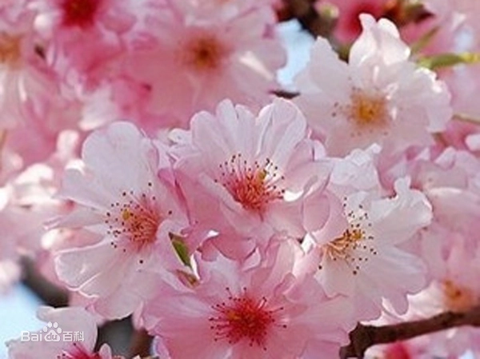

正确答案是C哦，你答对了吗
樱花花语：樱花是爱情与希望的象征，代表着高雅，质朴纯洁的爱情。樱花宛如懵懂少女的，安静得在春天开放，满树的白色粉色的樱花，是对情人诉说爱情的最美语言。心中的某个人，就如那场寂寞的樱花雨，缓缓消失在时光的深处，留下永恒的记忆。
小故事：樱花是爱情与希望的象征，日本的代表物之一。在日本，相传在很久以前，日本有位名叫“木花开耶姬”（意为樱花）的仙女。有一年11月，仙女从冲绳出发，途经九州、关西、关东等地，在第二年5月到达北海道。沿途，她将一种象征爱情与希望的花朵撒遍每一个角落。为了纪念这位仙女，当地人将这种花命名为“樱花”，日本也因此成为“樱花之国”。
环科类2107-2022.3.10-T1
powered by ZH☆